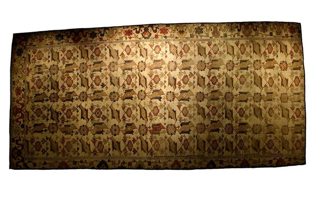

الرئيسية › أماكن تستحق الزيارة حسب الولاية › قونية
يضم دليل Kültür Varlıkları 22 مكانًا في قونية: 10 متحف, 7 موقع أثري, 2 مبنى ديني, 2 بحيرة, 1 قلعة ومبنى تاريخي. ستجد أدناه أبرز الأماكن وخريطة والقائمة الكاملة.
⭐ أبرز الأماكن

1 · قونية · موقع أثريموقع تشاتال هويوك الأثري
تشاتال هويوك، في سهل قونية، مستوطنة كبيرة من العصر الحجري الحديث، ومن أهم الشواهد على انتقال البشرية إلى الحياة المستقرة الشبيهة بحياة المدن.

2 · قونية · متحفمتحف مولانا
يضم متحف مولانا في قونية ضريح المتصوف والشاعر الكبير جلال الدين الرومي وتكية أتباعه المولويين.

3 · قونية · متحفمتحف نصر الدين خوجا للآثار والإثنوغرافيا في آق شهر
يعرض متحف نصر الدين خوجا للآثار والإثنوغرافيا تاريخ آق شهر الطويل، حيث عاش الفكاهي ذائع الصيت نصر الدين خوجا (جحا) ودُفن.
🗺 على الخريطة
📍 جميع الأماكن (22)
متحف (10)
متحف مولانامتحفمتحف نصر الدين خوجا للآثار والإثنوغرافيا في آق شهرمتحف متحف مقر الجبهة الغربيةمتحف
متحف مقر الجبهة الغربيةمتحف متحف قراطاي (متحف البلاط)متحف
متحف قراطاي (متحف البلاط)متحف متحف قونية الأثريمتحف
متحف قونية الأثريمتحف متحف بيت أتاتورك في قونيةمتحف
متحف بيت أتاتورك في قونيةمتحف
متحف قونية الإثنوغرافيمتحف متحف بانوراما قونيةمتحف
متحف بانوراما قونيةمتحف متحف مدينة عزت قويون أوغلومتحفمتحف أرغليمتحف
متحف مدينة عزت قويون أوغلومتحفمتحف أرغليمتحفموقع أثري (7)
موقع تشاتال هويوك الأثريموقع أثري · UNESCO بونجوكلو هويوكموقع أثري
بونجوكلو هويوكموقع أثري نصب أفلاطون بينار الحيثيموقع أثري
نصب أفلاطون بينار الحيثيموقع أثري نُصب فاسيلارموقع أثري
نُصب فاسيلارموقع أثري كيليستراموقع أثري
كيليستراموقع أثري قصر قباد آبادموقع أثري
قصر قباد آبادموقع أثري قلعة زنكيبار (إيساورا)موقع أثري
قلعة زنكيبار (إيساورا)موقع أثري